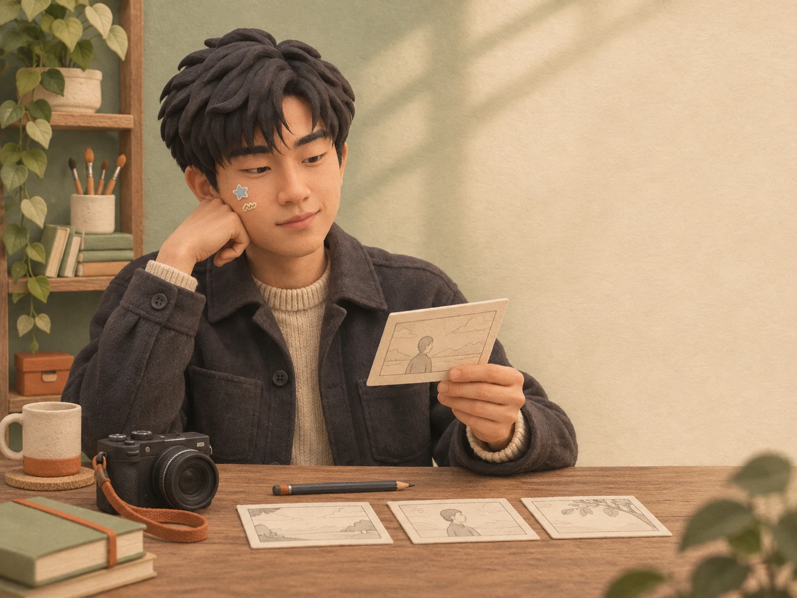
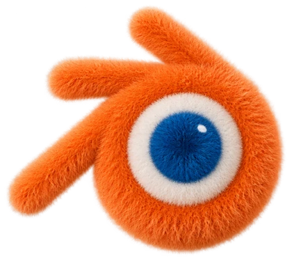
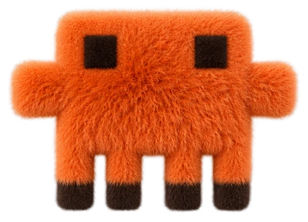

01 / AT THE DESK
从灵感到画面
火烈鸟怎么戴上了头盔？
我爱拍小动物，也喜欢收藏手办。把骑士的银色头盔戴到火烈鸟头上，两个兴趣就有了一个共同的角色。
用三格讲一次相遇
把镜头放到水面边
低机位把骑士、火烈鸟和水里的倒影放进同一张图。苔藓绿留给湖岸，银色头盔和一点粉色把视线带回这次相遇。
01 / PROFILE
我在北京做个人 IP 和内容创作。工作之外，我喜欢旅行、火锅、拍小动物和收藏手办。
无限进步。
把每次探索，都变成下一步的起点。
02 / VIBE
让角色动起来
从桌面上的手办，到屏幕里的小动作。


赵逸飞 个人 IP 与内容创作
作品手记里的细节图参考了 Eagle 收藏的分镜和插画，以本页的绿色黏土风重新演绎。
我爱拍小动物，也喜欢给熟悉的东西加一点意外。给火烈鸟戴上一顶头盔，湖边的相遇就有了故事。
在北京，我喜欢吃火锅，也喜欢到处走走。路上留意的小动物和不起眼的日常物件，都是可以带回工作台的灵感。
我喜欢收藏手办，会留意一个角色的轮廓、材质和小道具。像盔甲里的这朵白花，细节不大，却能让人记住它。
KEEP GROWING / 我的方向
无限进步把每次探索，都变成下一步的起点。
如果你也在做个人 IP 或内容创作，欢迎来聊聊你的想法。